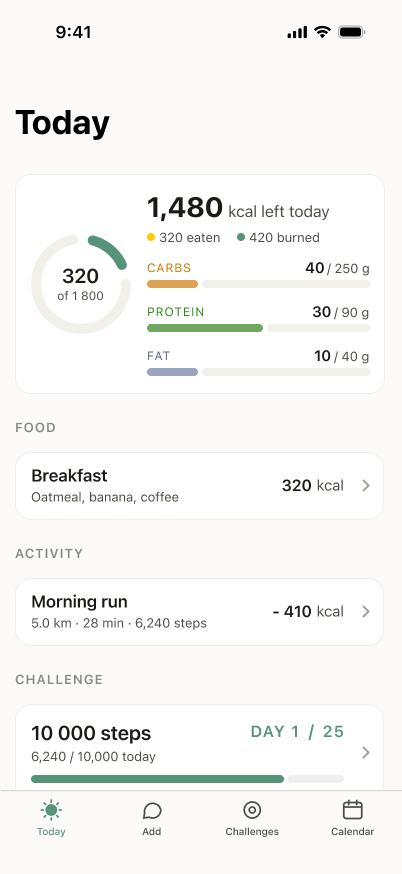
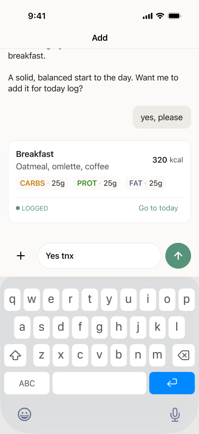
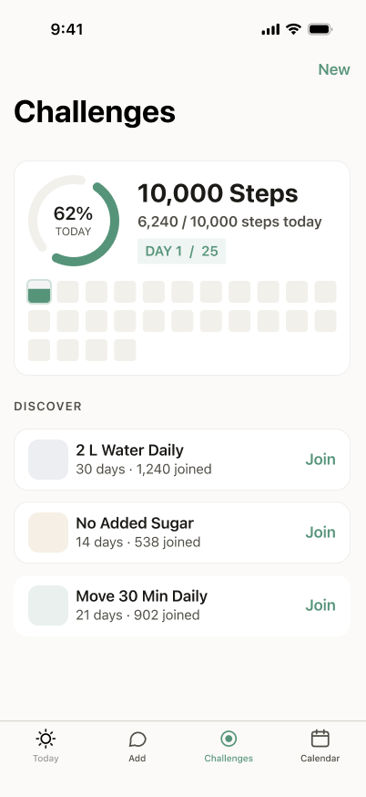
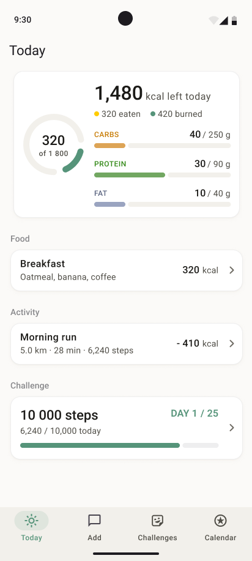
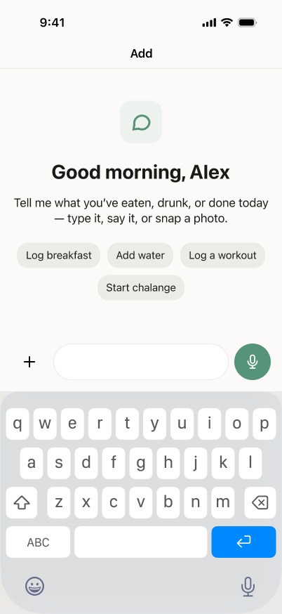
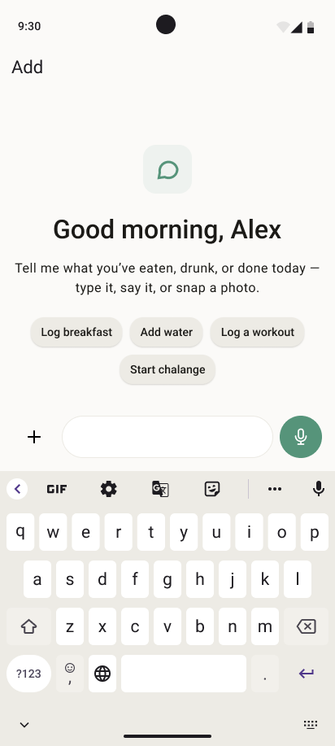
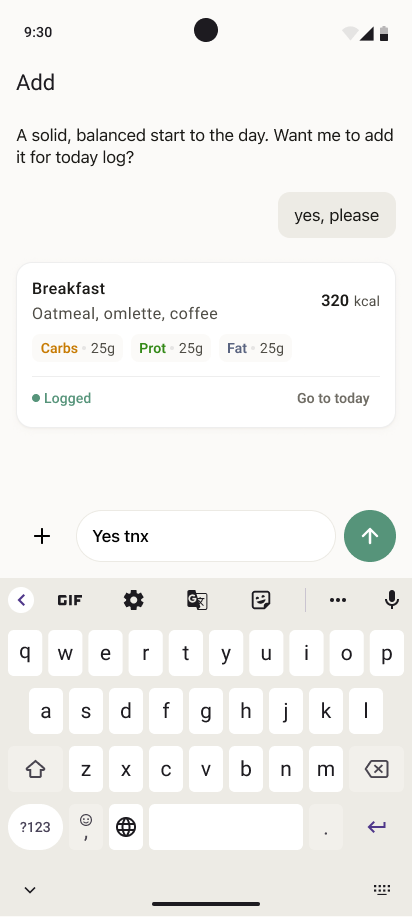
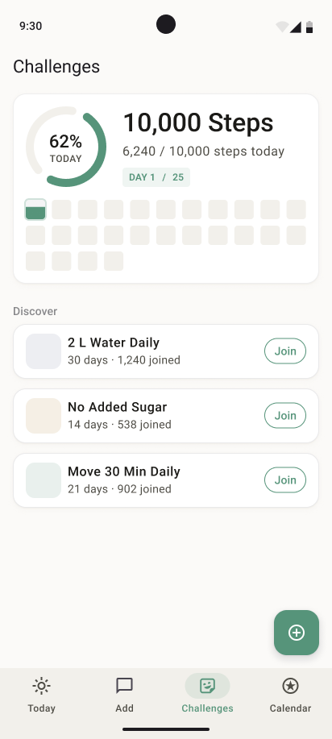

Role
Product & UX Design
DayLog is an AI-assisted, calorie-first tracker — designed for the people who keep starting calorie apps and quietly quitting them.



Describe-it or snap-a-photo logging removed the friction that made calorie apps exhausting. But it introduced a new problem: when an AI hands you a number, you don't know if it's right — and a tracker you can't trust is one you quietly abandon.
Describe-it or snap-a-photo logging is now the dominant pattern. The chat alone is no longer a differentiator — the field is crowded.
Every AI tracker gets the same complaint: wrong portions, missed ingredients, can't read a sandwich. Accuracy is where the category breaks.
The nutrition evidence is clear — reliable trends matter more than perfect numbers. Staying engaged beats getting every calorie exactly right.
Wants to log in seconds and trust the number without checking each item. Speed and accuracy, together.
Doesn't trust the AI. Wants to enter food himself and see the math.
Likes logging. Wants macros, trends, activity tied into net energy.
Tracking once tipped into anxiety. Needs a calm, non-judgmental tone.
A skeptic types her first meal and gets a fast result she can sanity-check, item by item.
The app learns her regulars and saves them — next time it's one tap, and exact.
A number looks off; she taps the item and fixes it in seconds. The fix teaches the library.





iOS keeps a light, hairline tab bar. Android uses a filled bar with a pill highlight behind the active tab.
Status bar, signal and time styling follow each platform's own conventions rather than a single custom header.
Editing uses the picker each user already knows — wheel selectors on iOS, steppers and fields on Android.
Android respects the system back gesture; iOS leans on in-screen back and pull-to-dismiss sheets.
This is a concept taken from discovery to first mockups. The next step is to pressure-test the assumptions with real people before going deeper.